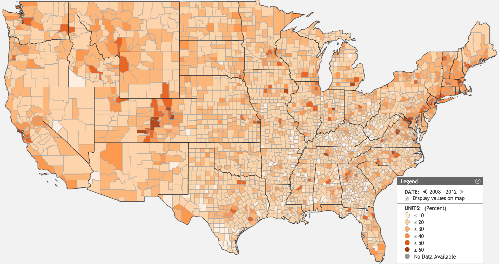

Ishaan Khanna
Python · SQL · R · Power BI
View my LinkedInAnalytics professional with three years of experience turning complex data into actionable business insights across healthcare, insurance, and risk analytics. I’ve built Python- and R-based analytical solutions, developed machine learning models, and translated technical findings into recommendations for both client leadership and non-technical stakeholders.
At EXL, my work contributed to $450K in annual savings for a U.S. health insurer and improved the identification of policyholders with critical conditions by 30%. My experience spans fraud analytics, predictive modeling, KPI reporting, data visualization, and large-scale data analysis using Python, R, SQL, Excel, and Tableau.
I’m currently pursuing a Master of Management in Analytics at McGill University and am interested in data analytics and data science opportunities where I can combine rigorous quantitative analysis with business problem-solving, particularly in consulting and financial services.

Gender Wage Disparity Across the EU
Analyzed gender wage disparities across European Union countries using SQL and Pandas to clean, combine, and explore economic and labor datasets and identify trends across countries and time periods.
SQL · Python · Pandas
Cybersecurity Losses in the Insurance Industry
Analyzed the financial impact of cybersecurity incidents on the insurance industry using R. Applied Decision Tree and Naive Bayes machine learning techniques to identify patterns associated with cyber risk and financial losses.
R · Decision Trees · Naive Bayes

Cost of Higher Education in the U.S.
Developed an interactive geographical visualization in R Shiny to explore the cost of higher education across the United States and compare geographic patterns in education costs.
R · Shiny · Data Visualization